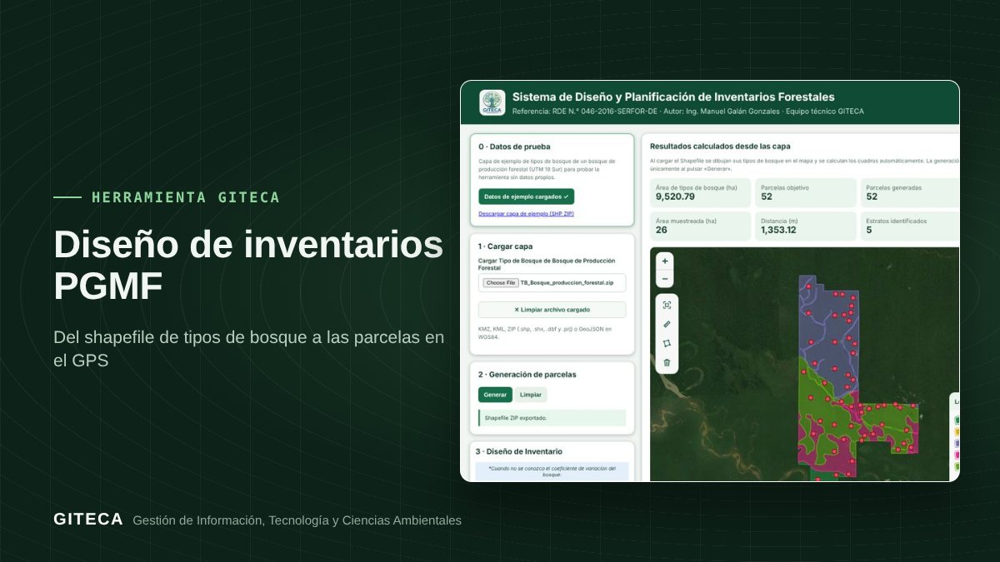

Diseña el inventario de tu PGMF en minutos, no en días
Con un solo shapefile de tipos de bosque, la app calcula superficies, número e intensidad de parcelas, las distribuye por estrato y las exporta listas para el GPS.

¿Cuánto tiempo le toma a tu equipo diseñar el inventario de un Plan General de Manejo Forestal?
El diseño del inventario es uno de los pasos más repetitivos del PGMF: calcular la superficie de cada tipo de bosque, definir cuántas parcelas van en cada estrato, ubicarlas respetando la separación mínima y entregar coordenadas para el trabajo de campo. Lo desarrolló el Ing. Manuel Galán Gonzales, del equipo GITECA, siguiendo la RDE N.° 046-2016-SERFOR-DE.
Antes y ahora
- Calcular en el SIG la superficie de cada tipo de bosque.
- Pasar las cifras a la plantilla de Excel para obtener número, dimensiones, intensidad y distancia de parcelas.
- Dibujar las parcelas a mano en cada estrato, cuidando la separación entre ellas.
- Generar centroides, armar la tabla y exportar por separado a SHP, KML y Excel.
- Subes el shapefile de tipos de bosque (o usas la capa de prueba).
- La app calcula superficies y el diseño de inventario en la misma pantalla.
- Pulsas «Generar»: las parcelas se distribuyen de Este a Oeste en cada estrato.
- Exportas parcelas y centroides en SHP, KML, Excel y GeoJSON.
Tiempos de referencia estimados por el equipo GITECA; varían según el tamaño del área y la experiencia del usuario.
En la práctica: Con la capa de prueba incluida (9 520,79 ha y 5 tipos de bosque), la app genera 52 parcelas, con una intensidad de 0,27 % y una distancia de 1 353 m entre parcelas.
Qué hace
- Lee SHP comprimido en ZIP, KML, KMZ o GeoJSON, en WGS 84 o UTM.
- Calcula la superficie por tipo de bosque y el diseño: número, dimensiones, área inventariada, intensidad y distancia.
- Distribuye las parcelas por estrato con separación mínima y avisa si alguna no pudo ubicarse.
- Exporta parcelas y centroides a SHP, KML, Excel y GeoJSON.
Para quién es
Empieza en 3 pasos
- Solicita tu código de acceso por WhatsApp o correo.
- Carga tu capa de tipos de bosque o prueba con la de ejemplo.
- Genera las parcelas, revísalas en el mapa y exporta.